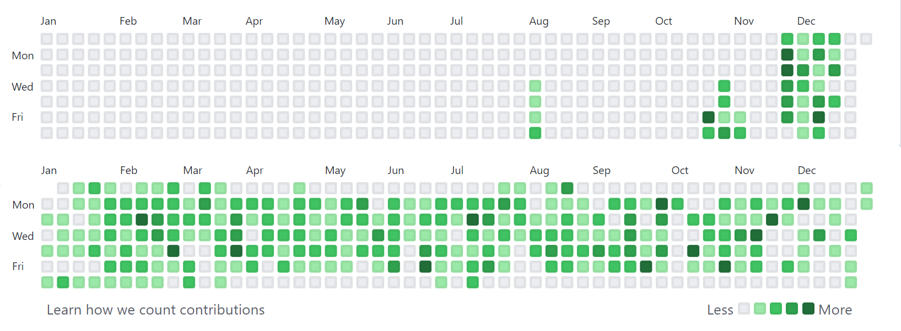
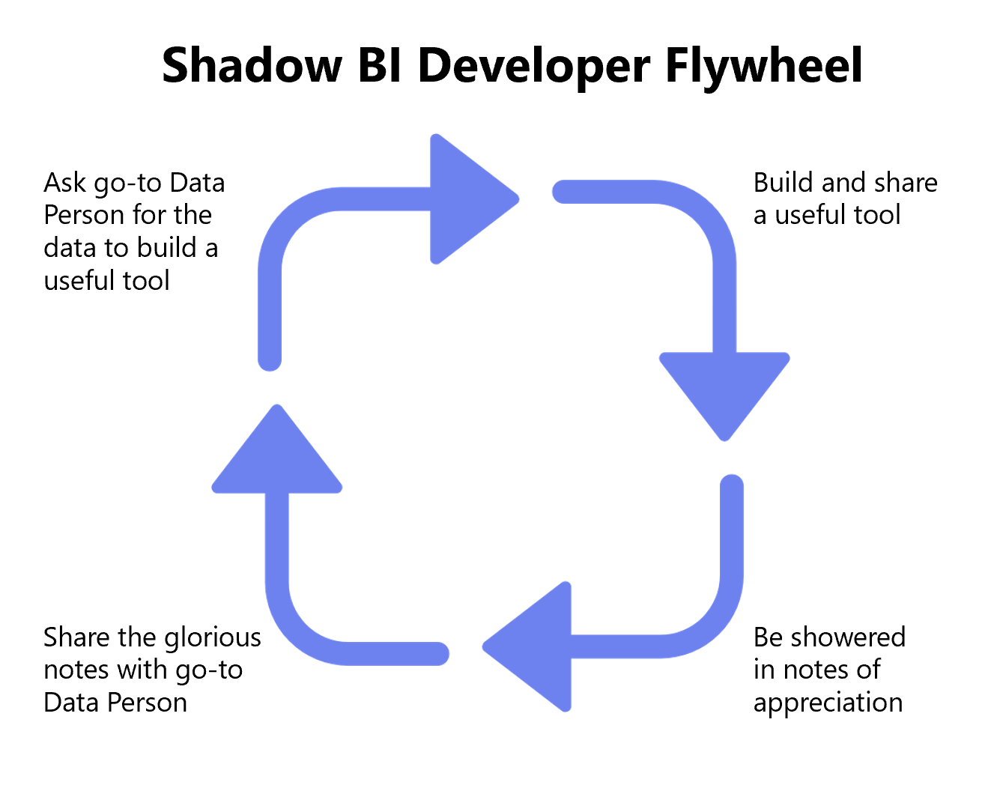

Sometime last year, I was interviewing for a lead analyst role at a really cool start-up1. I didn’t get the job, but during one of the rounds I got to speak with an executive who while scanning my LinkedIn during the call said something like:
So you were doing customer success for a few years, and then became a data manager… that’s pretty weird. How did that happen?
After summarizing how it happened, he said: You should be selling this story a lot harder.
As I wrap up an 8+ year stint with my current company, my first since graduating college, I’d like to retrospect on some of the circumstances that helped me shift my career into data 4-5 years ago, share a few anecdotes, and nine insights formed by this experience.
“How to Learn Data Science” (Depends Who You Ask) üîó
I’ve probably read over a hundred How I Learned <insert data skill> blog posts, each of which typically suggests a variety of online resources, including interactive coding modules, MOOCs2, videos, and books. Some of the same resources are mentioned repeatedly, but more often than not, the resources recommended in these posts have very little overlap.
There’s no doubt that some resources are higher quality than others, but I think the lack of overlap reveals that there are many perfectly viable resources and pathways to learning data skills. I’m not going to go into detail about the resources I used to learn R and SQL because:
1) What worked for me might not work for someone else
2) Lists of resources just aren’t that interesting, but I’ll chuck some of my favorites in the footnotes anyway3
In short, my experience involved investing a lot of time outside of my job learning data transformation and visualization, and slowly integrating these skills into the workflows of relevant use cases, on the job. In retrospect, I can say that I developed a near-daily learning habit, but it really didn’t feel like it at the time. I’m still surprised by the consistency of code commits on the GitHub contribution graph from my first year-ish of learning R, in 2017 and 2018.

Baby’s First CSV File üîó
I joined Discovery Education in 2013 as a Customer & Tech Support rep, where I was responsible for answering calls and responding to emails and live chats from classroom teachers who needed assistance with the DE learning platform. Think lots of password resets.
Some background: I was thrilled to land this job4, having recently graduated with a B.S. in Kinesiology, an interest in working in sports, but no luck landing a full-time gig. The idea of working at Discovery felt (and still feels) unbelievably cool. In terms of data work, I’d always loved baseball stats, but a career in it was absolutely not on my radar, nor was it a major aspect of my first role.
During my onboarding, one of my new colleagues introduced to the concept of “csv files,” which customers (school districts) would provide to import their school rosters into our platform, generating user accounts in bulk. I’d used Excel a couple of times in college, but hadn’t heard of this kind of file before. My colleague explained that csv stood for comma separated values, and we moved onto the next training topic.
This is a boring anecdote on its own, but it feels good to occasionally acknowledge that some of the things and skills we use all-day-every-day were completely unfamiliar, not that long ago. Despite a few bumpy patches related to leading zeroes and character encodings, my relationship with CSV files today has never been strongerü§ù.
Lesson Learned #1: While it felt good to look back at concepts that I’d learned5, to avoid complacency, it’s helped to look ahead to what I needed to learn next.
Building a Shadow CRM6 üîó
After almost a year on the Customer Support team, I was lucky enough to join the Account Services team (informally, The Renewals Team), where I was responsible for supporting and renewing portfolio of ~1,200 single-school customers. The more senior colleagues on the team managed similar books of business, but with fewer, larger accounts. Most of my days involved several hours of rapid-fire outbound phone calls, and juggling Excel tracking grids, which we each maintained on our laptops, outside of the actual CRM.
Every Monday, the team would receive a new Excel file via email from a BI system7, which had several tabs-worth of financial data. The main tab included summaries of each of my teammates' assigned customer subscriptions that were due for renewal, and their corresponding progress toward renewal goals. The other tabs were irrelevant to me (at the time <cue ominous music>) – and held the raw, granular datasets that powered the summary tab.
Each team member essentially maintained their own personal CRM. This involved the sacred ritual of VLOOKUP-ing the latest renewal status information from the weekly financials file, to their personal book of business file. Once our personal files were updated, we were left with our list of outstanding subscription renewals from which to work against.
Lesson Learned #2: There is a crazy amount of potential business value hidden away in deeply embedded, unarticulated workarounds that operational teams rely on. Unearthing and understanding these workarounds helped design data systems that people… actually used!
For someone like me with 1,200 accounts, my biggest challenge was determining how to prioritize which ones to contact first. I typically would sort my list to prioritize by renewal due date, subscription value, and state, but it still felt pretty arbitrary.
I started to keep a list of things I wish I knew about my assigned schools prior to contacting them, including product usage information, customer tenure, and several other attributes. Fortunately, I sat directly next to a colleague who was the company’s go-to hey-can-you-pull-this-data-for-me-real-quick guy. Every month or so, I would ask him to export product usage data, which I would used to enrich my personal file, helping me tailor my approach to each customer conversation.
Lesson Learned #3: Making friends with the incumbent go-to data people was a good idea. Instead of positioning data requests as a transaction, I learned to ask for consultation, learn the caveats, and negotiate their recommendations.
Having personally reaped the benefits of incorporating traditionally-siloed data into my personal sheet, I started to help my teammates with the same. Over time, I accumulated and compiled data from even more sources, such as customer support cases, customer tenure, indicators for enabled product integrations, and more. In hindsight, I built something primitively resembling what Benn Stancil envisions with his Yelp for the Enterprise analogy. The team started to rely on my compilation and distribution of the enhanced customer metrics every week. It was incredibly satisfying to hear from teammates that the files helped them be better at their jobs.
Lesson Learned #4: In addition to identifying small ways that existing workflows can be noticeably improved via data visibility, I had to prove it. Regardless of how the improved workflows may be, proving the value-add was the best way to earn myself more opportunities to work on data-related projects.
Lesson Learned #5: Creating feedback loops (e.g., passing thank you notes I received onto the folks who supplied me the raw data) can lead to compounding benefits. They might be satisfied to know that their work has helped make an impact… and they will be more keen (or at least less annoyed) to help with the next time you request a data pull. (See tongue-in-cheek flywheel below). Also, it’s important that your manager gets to see the evidence of return on investment.

Automating the Boring Stuff üîó
It’s worth acknowledging that spending several hours a week munging and mashing several spreadsheets together was very much not what I was being paid to do. Throughout this experience, it was extremely important to earn and retain the approval of my managers to continue working on this, however, I was ultimately goaled on (and mostly compensated by) how well I performed against my renewal targets. I needed to find a way to support my Shadow BI efforts, and still have enough time to call my assigned schools – my, uh… actual job.
I was starting to learn R outside of work, on the recommendation of a friend whom I complained to about my Excel files constantly freezing my computer. After a while, I figured out how to translate my step-by-step data munging process into an R script, which could import each of the component Excel files as ingredients, and output a tasty, ready-to-distribute data meal for my teammates. The upfront investment of trial-and-erroring my way to a working R script ended up saving me hours of repetitive, and error-prone filtering, VLOOKUP-ing, and aggregation steps. Automating the boring stuff8 allowed me to maintain my impact, while unlocking capacity elsewhere.
Lesson Learned #6: Take stock of repetitive tasks, and seek out ways to automate them. For me, this created new blocks of time to work on high impact problems. Early on, I worried about automating myself out of a job9, but soon realized I was automating my way into a more impactful job.
Lesson Learned #7: The process of developing Shadow BI tools helped me develop relatively deep subject matter expertise on several domains within the business, which paved the way to opportunities in the future.
My First Real Data Job üîó
By the end of 2017, I’d negotiated a reduced account load, in order to dedicate ~40% of my time toward data analysis in support of my renewals team. This was a big win for me, but by this point I wanted to go all-in on data, and distance myself from the sales aspects of the job. Thanks to a recent corporate re-org, and the advocacy of my manager, I had an opportunity to apply for an open Salesforce Data Manager role, on the company’s Business Systems team.
I don’t remember much from the interview process, other than the hiring manager (and soon-to-be manager) telling me that the role would heavily rely on SQL for data migrations, analysis, and more. I didn’t know any SQL, but had collected a few queries from my go-to pull-some-data-real-quick friends over the years, which helped me build basic familiarity with the syntax. I shared that I was comfortable in R, and was learning SQL, but still considered myself to be a beginner.
Lesson Learned #8: New skills (e.g., SQL) can be learned relatively easier than subject matter knowledge. It was possible to borrow against my subject matter knowledge to earn opportunities that I was completely unqualified for, on paper üòé.
For the first couple months, I leaned on my R experience to compensate for my lack of SQL knowledge. Rather than querying the database directly, I relied on exporting CSV files from the Salesforce front-end, importing them into RStudio, and doing whatever needed to be done. After a while, I recognized this workflow to include several minutes of manual, repetitive work, which nudged me into learning:
- How to translate my point-and-click queries using Salesforce’s report builder into SQL. It helped that I was comfortable with the concept of joins from using the dplyr R package.
- How to send queries to the database from RStudio, and receive the results as a data table
Once again, automating the boring stuff helped me unlock blocks of time to learn new skills, and work on more impactful projects.
Strategic Laziness and 30x Productivity Gains üîó
About nine months into my Data Manager role, I was asked to temporarily support the Research and Analytics team work through a massive backlog of customer-facing usage report requests, during a particularly busy renewal season. The process of generating usage reports at the time was a doozy: generating data visualizations in Microsoft PowerBI, which pulled data from a linked Excel file, which itself was refreshed by several SQL Server stored procedures, then copying the visualizations into slides and/or documents, then sending the output to the district’s customer success rep. The start-to-finish process of generating a single report was extremely manual, and took about an hour.
After two days and only a handful of reports to show for, I floated the idea of exploring more automated solutions to the primary stakeholder, who would eventually become my manager a year later10. Before investing any time or effort into a less manual process, I wanted to make sure there was an openness to change the current process, and to gauge the tolerance for a potentially less-polished final output, given that the backlog was several hundred reports long. She was extremely open to iterating on the current process, which she admitted was a stopgap solution prior to investing in a true Business Intelligence tool11.
By coincidence, I had recently skimmed a blog post from the Urban Institute’s data team about creating parameterized fact sheets with R Markdown12. The blog post stepped through an example of generating a series of reports on car crash data, one for each State. They were able to do so by creating a parameter, or filter value, which could be updated to Maryland for example, and generate a report with Maryland-only data.
This was exactly the kind of solution I was looking for to automate my way through the backlog of report requests. It took me a few days to get everything working the way I had hoped, but I ended up creating an RMarkdown file, which:
-
Took parameter values for School District ID, Start and End Dates, and Products
-
Piped the parameter values into a parameterized SQL query
-
Sent the query to SQL Server, and returned the results as a data frame
-
Used the data frame to generate several standardized graphs using R’s
ggplot2 -
Used the data frame enrich the report’s written narrative with inline metrics (i.e., Between
<start date>and<end date>,<Name of School District>had<number of students>Active Students.)
I went back and forth with the stakeholder(s) to agree on a standardized format, and made clear that this would be the format for all reports. In exchange, I committed to being able to run 10 reports a day, rather than 3.
So, why is this section called Strategic Laziness?
This 3x productivity commitment was met with excitement, but was actually a pretty conservative estimate. The old process took me about an hour end-to-end, while the new process could generate a report in under three minutes⚡. As I started using the process, I ended up delivering between 25 and 40 reports a day: an 8-13x+ productivity gain. If I dedicated a whole day generating reports, I think I could have easily pumped out 100 reports: a 30x gain, but I never did this, and I think for good reason.
Sometimes doing less of your assigned work can lead to an increased impact, if the reserved capacity is reinvested in high-leverage projects. This seems counterintuitive, and could be mistaken for laziness or poor performance if managed incorrectly. I recently heard Matt Greenberg13, CTO of Reforge, refer to this pattern as “modulating your output.”
Lesson Learned #9: Opportunities to modulate my output created opportunities to do my highest leverage work.
Learning 4ever üîó
It’s been tricky to distill this years-long transition into a few hundred words, and to articulate the major takeaways from each anecdote. Each of the insights were formed slowly and silently throughout my experience. I’ve never put words to, or even really thought about them until outlining this reflection. Hopefully that means my time was spent working on good stuff, rather than talking about it.
To recap my major learnings:
1) Celebrating progress is good, but avoiding complacency is better
2) Unarticulated Workarounds = Massive Opportunities
3) Making friends with internal experts rules
4) Showing Impact –> More Opportunities to do cool stuff
5) Sharing your Thank Yous can create compounding success
6) Automating repetitive tasks –> More time to do cool stuff
7) The data tool creation process naturally builds subject matter muscle
8) Within a company, subject matter knowledge costs more than technical skills
9) When appropriate, modulating your output in one area can accelerate impact in others
Looking ahead to hopefully several more decades of working (in data or elsewhere), one thing I know for sure is that the world is changing exponentially14, and we’ll all have to create the time to keep up with it.
-
It feels weird to disclose interview experiences while you’re employed, so I’m writing this during my transition period between companies. Poof, absolved of judgement. ↩︎
-
Several DataCamp courses, Introduction to R for Data Science (edX), Sabermetrics 101: Introduction to Baseball Analytics (edX), and the process of writing the previous posts on seth.cool. ↩︎
-
Big shoutout to my friend from college, Ashley, who spent maybe six weeks in the same role before resigning to pursue a career in teaching ↩︎
-
Typically the concepts that feel good to look back on are more complex than what CSV stands for, but it all counts! ↩︎
-
As in, not the officially-supported company CRM. Something I created on my own, like:
account_renewals_2015-03-24_SethG_final_v2.xlsx↩︎ -
Someday there will be a less corporate, soul-crushing name for these systems than Business Intelligence :( ↩︎
-
I’ve borrowed this phrase from the popular programming book, Automate the Boring Stuff with Python, which teaches readers to complete tedious professional tasks using Python. ↩︎
-
Sweeping generalizations about automation is an American tradition. The New York Times has dozens of articles over the past 70 years on the topic, like Fears About Automation Are Overshadowing Benefits to U.S._ and Button Pushers Are Worried, Too, printed in 1961. ↩︎
-
In early 2019, I joined the Analytics team, focusing on product analytics and data infrastructure for ~3 years. ↩︎
-
After a lengthy selection process, we signed on with Looker ↩︎
-
Iterated fact sheets with R Markdown, by Aaron Williams of The Urban Institute ↩︎
-
I’m also quite fond of Matt’s Monkeys vs. Rocks analogy, which he describes in this Twitter thread ↩︎
-
Packy McCormick’s Compounding Crazy essay was a real eye-opener on the exponential nature of innovation, and the concept of the Die Progress Unit. ↩︎